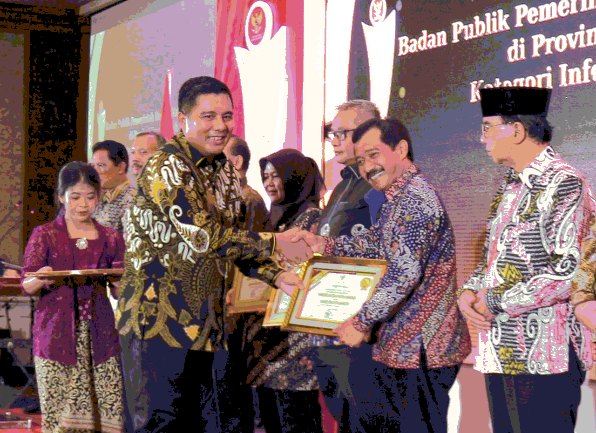
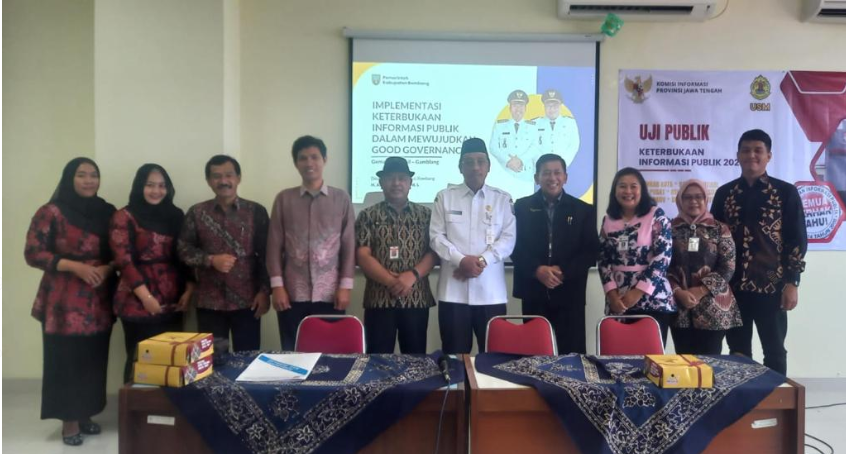
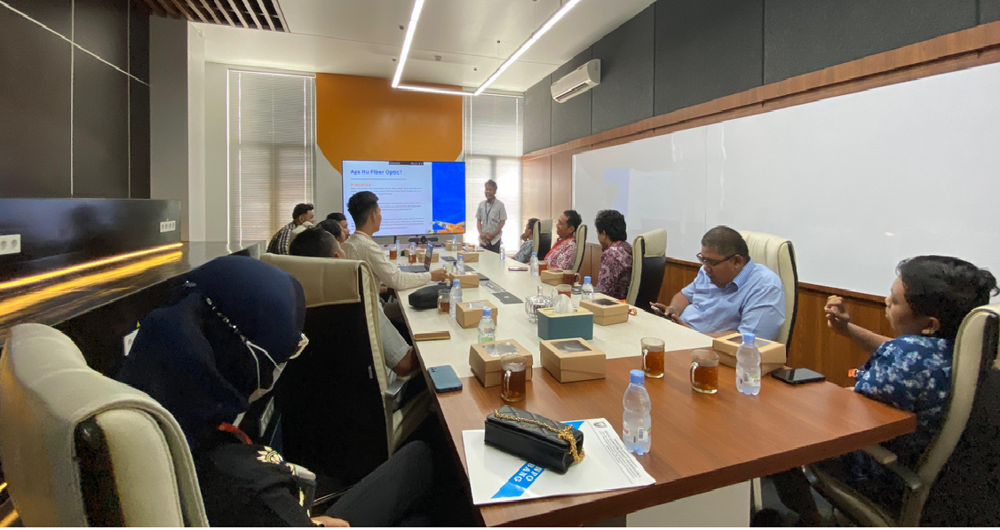
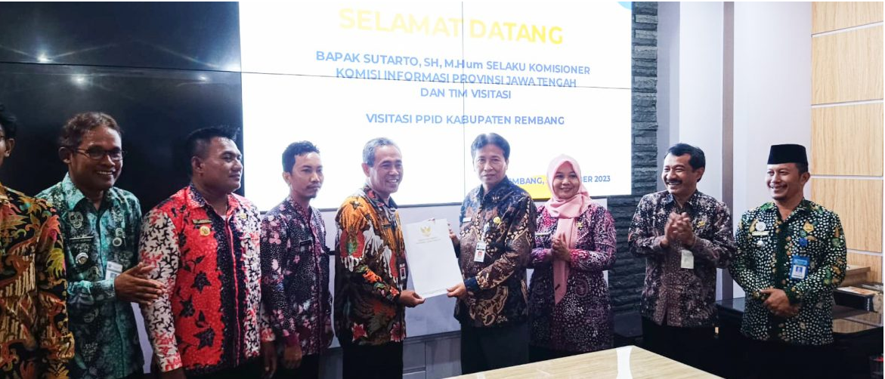
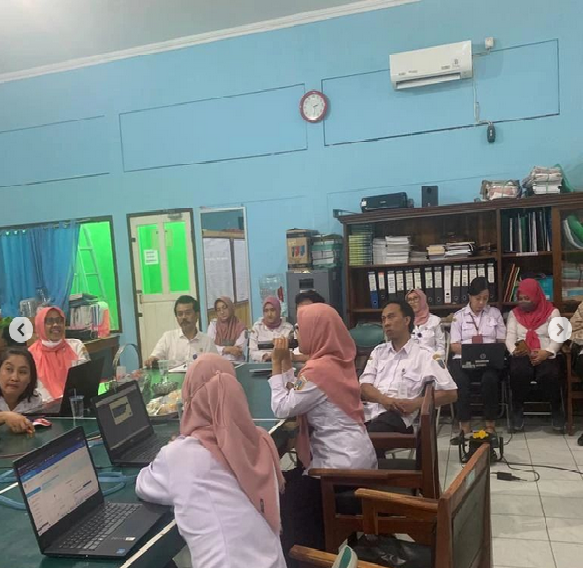
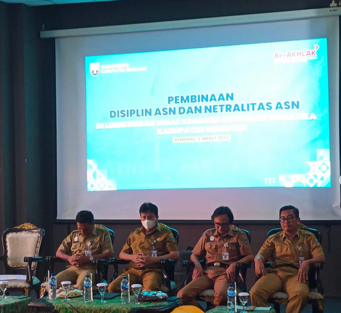

Dinkominfo Kabupaten Kembali Meraih Penghargaan Badan Publik
Pemerintah Daerah Kabupaten/ Kota Kategori Informatif Tahun
2023
Menuju Kabupaten Informatif, Bupati Rembang Ikuti Uji Publik
Keterbukaan Informasi
Pelatihan Mikrotik Routing dan OLT (Optical Line
Termination)
Komisi Informasi Jateng Umumkan Pemkab Rembang Lolos ke Tahap
Uji Publik
Pemerintah Kabupaten Rembang Raih Prestasi Tingkat
Nasional
Bimtek Dalam Rangka Pendampingan Penggunaan Aplikasi
Srikandi
Sosialisasi Pembinaan Disiplin Dan Netralitas ASN Di Dinas
Komunikasi Dan Informatika Kabupaten Rembang
Kominfo Sosialisasikan Stunting Melalui Media
Tradisional
INFO PENTING !!!
| 1. | Mulai tanggal 25 sampai tanggal 1 Desember layanan untuk sementara libur |
| 2. | Untuk pengajuan stampel masih dibuka |
| 3. | Kantor buka mulai jam 7 pagi - 4 sore |
BERITA
GALERI